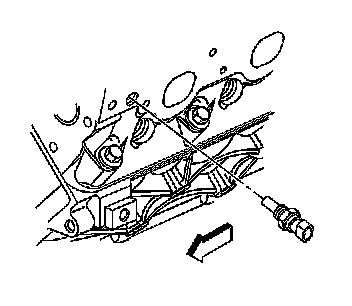

Coolant Temperature Sensor/Switch (For Computer): Service and Repair
ENGINE COOLANT TEMPERATURE SENSOR REPLACEMENT
REMOVAL PROCEDURE
NOTE: Use care when handling the coolant sensor. Damage to the coolant sensor will affect the operation of the fuel control system.

1. Drain the cooling system to a level below the engine cooling temperature (ECT) sensor. Refer to Draining and Filling Cooling System (Vac-N-Fill). Service and Repair
2. Disconnect the engine wiring harness electrical connector (2) from the ECT sensor.

3. Remove the ECT sensor.
INSTALLATION PROCEDURE
NOTE:
- Replacement components must be the correct part number for the application. Components requiring the use of the thread locking compound, lubricants, corrosion inhibitors, or sealants are identified in the service procedure. Some replacement components may come with these coatings already applied. Do not use these coatings on components unless specified. These coatings can affect the final torque, which may affect the operation of the component. Use the correct torque specification when installing components in order to avoid damage.
- Use care when handling the coolant sensor. Damage to the coolant sensor will affect the operation of the fuel control system.
1. If installing the old sensor, coat the threads with sealant GM P/N 12346004 (Canadian P/N 10953480) or equivalent.
2. NOTE: Refer to Fastener Notice.
Install the ECT sensor.
Tighten the sensor to 20 N.m (15 lb ft).
3. Connect the engine wiring harness electrical connector (2) to the ECT sensor.
4. Refill the cooling. Refer to Draining and Filling Cooling System (Vac-N-Fill). Service and Repair